1064A24 variable geometry turbocharger exhaust manifold assembly sleeveleading to exhaust pipe r r
- Path
- Procedures > 10 ENGINE > 1064 ENGINE TURBOCHARGING SYSTEM > 1064A turbo charger assembly > 1064A24 variable geometry turbocharger exhaust manifold assembly sleeveleading to exhaust pipe r r
- Kind
- repair procedure (removal / refitting; the operation number is the code)
- Applies to
- engines: 1.9 JTD 8V, 1.9 JTD 16V; all production periods
- Interactive page
- https://sloeber94.github.io/elrnDB-a147/en/#/3025057
Applies to: engines: 1.9 JTD 8V; all production periods
 Removing
Removing
 Refitting
RefittingPlace the car on a ramp.
7055B54 under-engine guard - r r
Position a suitable container under the engine for recovering the coolant fluid.
Open the lower radiator pipe collar and drain the coolant completely into the underlying container.
1. Undo nuts (1a) securing the front section of the exhaust pipe to the sleeve joining the turbocharger to the exhaust manifold (1b).
Recover the underlying gasket.
2. Undo the bolt (2a) fixing the reinforcement bracket (2b).
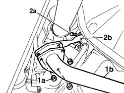
Applies to: engines: 1.9 JTD 8V; all production periods
1. Loosen band (1a) and disconnect the air supply hose between the turbocharger and the heat exchanger (1b).
2. Loosen band (2a) and disconnect the air intake sleeve to the turbocharger (2b).
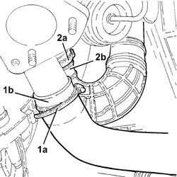
Applies to: engines: 1.9 JTD 8V; all production periods
1. Disconnect the vacuum pipe from the turbocharger variable geometry control actuator.
2. Undo bolts (2a) and (2b), then remove the engine oil return pipe from the turbocharger (2c).
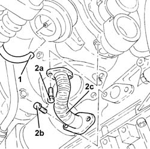
Applies to: engines: 1.9 JTD 8V; all production periods
1. Undo connector (1a) and disconnect engine oil supply pipe to the turbocharger (1b).
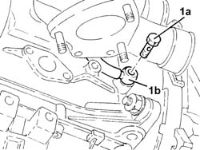
Applies to: engines: 1.9 JTD 8V; all production periods
Lower the lift.
1016A10 sound-proofing cover - r + r
1072C44 exhaust manifold heat shield on bulkhead - r+r
1. Unscrew the retaining bolts
2. Separate the rigid pipe carrying exhaust gas to the EGR solenoid from the exhaust manifold.
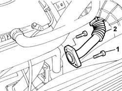
Applies to: engines: 1.9 JTD 8V; all production periods
1. Disconnect the engine coolant lines connected to the rigid coolant input pipe to the pump.
2. Unscrew the retaining bolts
3. Remove the rigid pump coolant intake pipe.
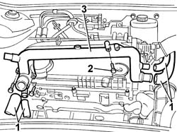
Applies to: engines: 1.9 JTD 8V; all production periods
1. Undo the nuts fixing the exhaust manifold to the cylinder head.
2. Fit turbocharger (2a) with exhaust manifold (2b) and sleeve connected to exhaust pipe (2c) from underneath the car.
3. Remove the exhaust manifold gasket from from the studs on the cylinder head.
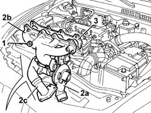
Applies to: engines: 1.9 JTD 8V; all production periods
Refitting
RemovingFit the new exhaust manifold gasket to the studs on the cylinder head.
Fit the turbocharger with the exhaust manifold and sleeve connected to exhaust pipe from underneath the car.
Tighten the nuts securing the exhaust manifold to the cylinder head to the recommended torque.
 | Fastening | Component | Ø | Value (daNm) |
|---|---|---|---|---|
- | Nut | EXHAUST MANIFOLD/S | M8 | 2.1 - 2.6 |
Fit the rigid pipe into the seat on the cylinder head.
Tighten the bolts securing the rigid pipe to the cylinder head to torque.
| Fastening | Component | Ø | Value (daNm) |
|---|---|---|---|---|
- | Bolt | COOLANT PUMP RIGID INLET PIPE | M6 | (Cylinder head) 0.8 ÷ 1.0 |
Connect the engine coolant pipe to the rigid pipe.
Fit the rigid pipe carrying exhaust gas to the EGR solenoid to the exhaust manifold.
1072C44 exhaust manifold heat shield on bulkhead - r+r
1016A10 sound-proofing cover - r + r
Raise the lift.
Connect the engine oil supply pipe to the turbocharger.
Fit the engine oil return pipe from the turbocharger and tighten the retaining bolts.
Connect the vacuum pipe of the variable geometry control actuator to the turbocharger.
Connect the air inlet pipe to the turbocharger.
Connect the vacuum pipe from the turbocharger variable geometry control actuator.
Connect the air supply hose between the turbocharger and the heat exchanger.
Fit the gasket of the front section of the exhaust pipe to the sleeve.
Fit the exhaust pipe to the sleeve joining the turbocharger and exhaust manifold.
| Fastening | Component | Ø | Value (daNm) |
|---|---|---|---|---|
- | Nut | EXHAUST PIPE TO ENGINE | M8 | (Exhaust manifold) 3 |
Connect the lower radiator hose.
Applies to: engines: 1.9 JTD 16V; all production periods
Removing
RefittingPosition the vehicle on the ramp
Proceed with removal 1016A10 sound-proofing cover - r + r .
Proceed with removal 7055B54 under-engine guard - r r .
Proceed with removal 1088D24 rigid pipe for coolant inlet to water pump - r + r .
1. Undo the bolts (1a) and remove the exhaust manifold heat shield (1b).
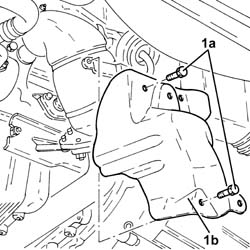
Applies to: engines: 1.9 JTD 16V; all production periods
1. Undo the nuts (1a) and remove the upper exhaust manifold heat shield (1b).
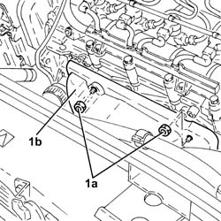
Applies to: engines: 1.9 JTD 16V; all production periods
1. Undo the nuts fixing the front section of the exhaust pipe to the catalytic pre-converter.
2. Undo the nuts fixing the front section of the exhaust pipe to the catalytic converter.
3. Remove the front exhaust pipe section complete with seals.
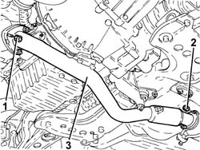
Applies to: engines: 1.9 JTD 16V; all production periods
1. Disconnect the vacuum pipe from the turbocharger variable geometry control actuator.
2. Loosen the band and disconnect the air supply hose between the turbocharger and the heat exchanger, turbocharger side.
3. Loosen the band and disconnect the corrugated air intake sleeve to the turbocharger, turbocharger side.
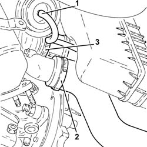
Applies to: engines: 1.9 JTD 16V; all production periods
1. Undo the bolts (1a) and the nuts (1b) fixing the catalytic preconverter mounting bracket.
2. Undo the bolts securing the engine oil return pipe from the turbocharger, engine crankcase side.
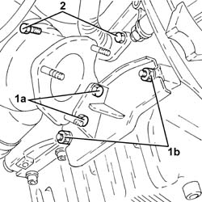
Applies to: engines: 1.9 JTD 16V; all production periods
1. Undo the connector (1a) and disconnect engine oil supply pipe to the turbocharger (1b), crankcase side.
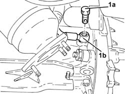
Applies to: engines: 1.9 JTD 16V; all production periods
1. Loosen the collar (1a) and remove the catalytic preconverter (1b).
2. Keep the catalytic preconverter mounting bracket.
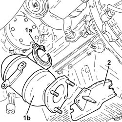
Applies to: engines: 1.9 JTD 16V; all production periods
1. Undo the nuts (1a) and remove the variable geometry turbocharger assembly (1b) complete with exhaust manifold (1c).
2. Remove the exhaust manifold gasket.
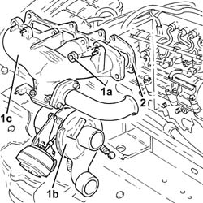
Applies to: engines: 1.9 JTD 16V; all production periods
Refitting
Removing1. Place the exhaust manifold gasket in the housing.
2. Place the variable geometry turbocharger assembly (2a) complete with exhaust manifold (2b) back in its housing and secure it using the nuts (2c).
| Fastening | Component | Ø | Value (daNm) |
|---|---|---|---|---|
2c | Nut | EXHAUST MANIFOLD/S | M8 | (Cylinder head side) 2.3 ÷ 3.3 |
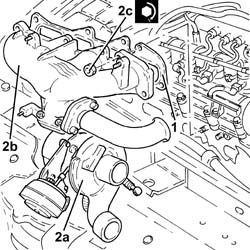
Applies to: engines: 1.9 JTD 16V; all production periods
Place the catalytic preconverter complete with mounting back in its housing and fasten it to the turbocharger using the collar.
1. Connect the engine oil delivery pipe to the turbocharger (1a), crankcase side, and tighten the connector (1b) to the recommended torque.
| Fastening | Component | Ø | Value (daNm) |
|---|---|---|---|---|
1b | Connector | OIL DELIVERY PIPE TO TURBO | M12 | (Engine crankcase side) 1.4 ÷ 1.7 |
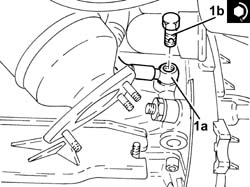
Applies to: engines: 1.9 JTD 16V; all production periods
Tighten the bolt fixing the enigne oil return pipe from the turbocharger, engine crankcase side.
Tighten the bolts and the nuts fixing the catalytic preconverter mounting bracket.
Connect the corrugated air intake sleeve to the turbocharger, turbocharger side, and tighten the band.
Connect the air supply hose between the turbocharger and the heat exchanger, turbocharger side, and secure with a band.
Connect the vacuum pipe from the turbocharger variable geometry control actuator.
1. Place the front section of the exhaust pipe with gaskets back in its housing.
2. Tighten the nuts securing the exhaust pipe front section to the catalytic converter to the specified torque.
| Fastening | Component | Ø | Value (daNm) |
|---|---|---|---|---|
2 | Nut | PRE-CAT CONVERTOR/CAT CONVERTOR PIPE | M8 | (Catalytic converter side) 2.3 ÷ 2.8 |
3. Tighten the nuts fixing the front section of the exhaust pipe to the catalytic preconverter to the recommended torque.
| Fastening | Component | Ø | Value (daNm) |
|---|---|---|---|---|
3 | Nut | PRE-CAT CONVERTOR/CAT CONVERTOR PIPE | M8 |
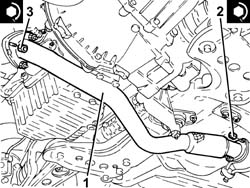
Applies to: engines: 1.9 JTD 16V; all production periods
Place the upper exhaust manifold heat shield back in its housing and fix it using the nuts.
Place the lower exhaust manifold heat shield back in its housing and fix it using the bolts.
Proceed with refitting 1088D24 rigid pipe for coolant inlet to water pump - r + r .
Proceed with refitting 7055B54 under-engine guard - r r .
Refill the engine cooling system with coolant 0010T20 coolant change .
Proceed with refitting 1016A10 sound-proofing cover - r + r .
Position the vehicle on the ramp